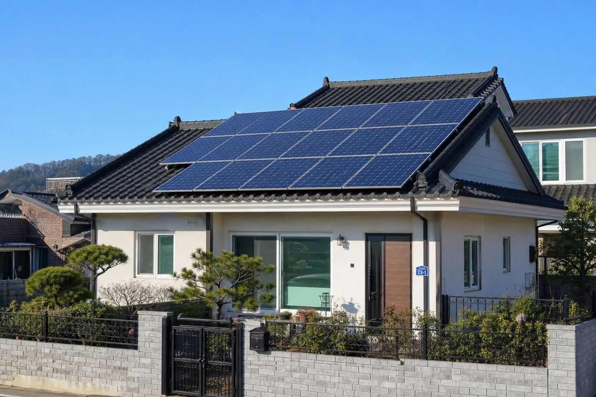
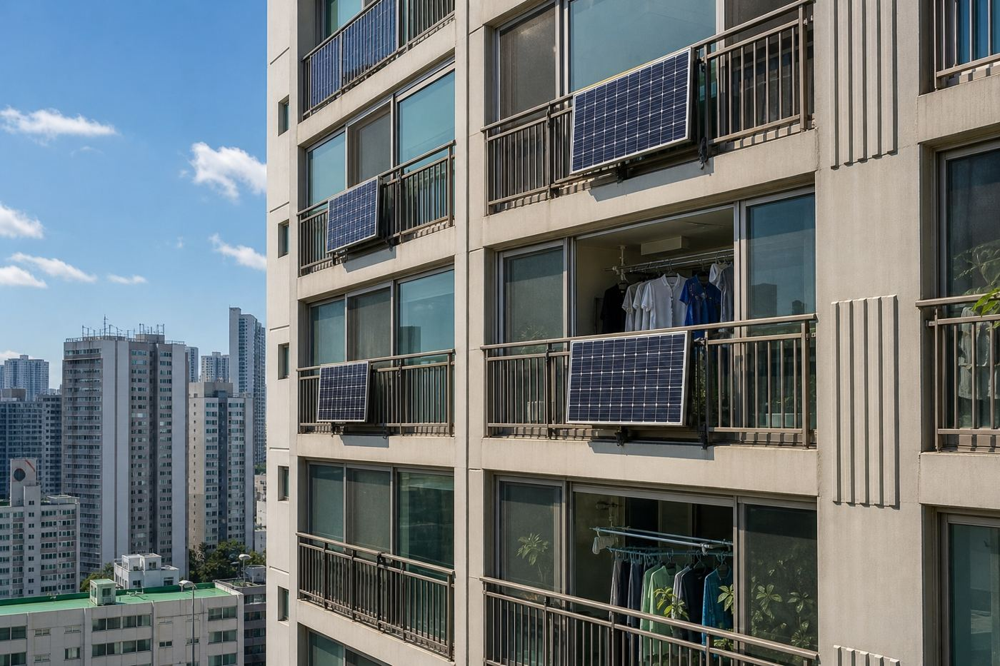

Electricity is becoming a matter of security, and not only for countries. Bring that logic down to one person and the answer changes. Someone who cannot make their own electricity ends up living the way somebody else decides.
That is a large sentence, so here is the small one underneath it.
I am one person in Seoul with a south facing balcony. No company, no team, no product, no funding. I studied accounting, not engineering.
I am starting with the smallest version of the idea that I can actually touch, learning the physics from zero, and publishing all of it. Including the parts that do not work.
Korea is a strange place to try this. The balcony solar programme collapsed in 2021. 68 companies took government subsidies, 14 of them shut down within three years, 11 within a single year. A national audit found companies that took the money and installed nothing at all. Seoul cancelled its subsidy in 2022 and has not brought it back.
So the gap here is not technology or price. It is that nobody believes anyone. My bet is that one ordinary person showing the whole thing in public is worth more in that market than another company with a good looking website.
First question: does it even work without a roof. One south facing balcony, measured and calculated before anything gets bought.
Find out what actually runs on it. A phone, a laptop, a small light. Start there and count.
Selling power directly to a neighbour is currently blocked by regulation in Korea. I treat this as a five year problem and keep notes until it opens.
Power made on a balcony is used in that home first. Only the surplus moves on. The third step is drawn here but is not legal yet.
Most people in Seoul live in apartments, so the starting point is not a roof. It is a balcony. And that creates a fork: do you hang the module outside the railing, or stand it inside the window?
Outside performs better but you have to get past building rules and the risk of something falling twelve floors. Inside is easy to install but the light passes through one more pane of glass. Saying that costs you some watts means nothing. So here it is as something you can press.
Switch between outside the railing and inside the window. Change the glass type and the loss appears immediately. Use ＋ for more modules, the slider to move the sun, and drag to rotate.
I chose inside the window for my own flat, so the lower number is the one I will actually live with. This is a calculation, not a measurement. Once something is physically installed I will replace these numbers with measured ones.

With a roof you get space, you can lay the panels flat, and you can set the angle.

In an apartment you get one railing and one or two modules, standing upright because they cannot be laid flat.
Panels, inverters and meters are things an individual can now handle. What actually stops people is not knowing what to file, where, and in what order. That is the part I am walking into myself so I can write the sequence down.
Seoul announced the end of its balcony solar subsidy in September 2021 and stopped it from 2022. It has never returned. In April 2026 a national programme for household balcony solar was added in a supplementary budget, aiming at 100,000 homes. Whether an individual in Seoul can apply to it is something I have not been able to confirm from the original notice yet. When I confirm it, it goes up here with the source.
Someone who can make electricity stands somewhere different from someone who can only buy it. It is less an argument about bills than about who decides.
In order, and written down whether it works or not.
South facing. Direct sun from 12:00 to 15:00. The panel goes inside the window. This part is confirmed.
How many watt hours a day, and what one pane of glass takes away. No number goes up without a source.
Buy a power station and a panel and install them myself. There is no money yet, so there is no date.
What worked, what did not, and what I got wrong. There are already enough records in this market that only mention the good parts.
This space could have been filled with plausible case studies. Instead it holds only what is certain right now. The day the zero becomes a one is the first real event in this record.
0.9 kW
Rated capacity of three 300W modules. The maximum in the drawing above. A calculated figure
3 hours
Direct sun on this balcony, 12:00 to 15:00. Observed, not estimated
0 installed
Systems actually built so far. Nothing has been made yet
These are real values, not placeholders. They get corrected the moment they change.
“You do not have to be a genius. If an ordinary person can do it with their own hands, then other ordinary people can too.”Why this record exists
Turn the balcony output into a number. Narrow the parts down to one choice. Publish the first write up.
Buy the parts as soon as there is money and build the first system. Publish the whole process including the receipts.
If somebody wants to build the same thing, build it with them. Neighbour to neighbour trading waits on the regulation.
Where I am not confident about a date, I have written that I am not confident. It moves with the money.
No. I have never studied electronics. So I write down the parts that people who know this already skip over. A record written by someone who does not know reaches other people who do not know.
No. No legal entity, no team. One person. NODOS is the name I keep the things I build under.
I do not have a roof either. One south facing balcony is the starting point, which is exactly why this should be useful to people living in apartments.
I do not know yet. Once the parts are bought I will publish the receipts. Naming a figure before buying anything is a guess, not information.
Selling directly to a neighbour is currently blocked by regulation here. I treat it as roughly a five year problem. Until then only the making and the using.
You draw from the grid, exactly as now. This is a beginning, not independence, and it seems better to say so at the start.
I cannot install anything for you. I have no licence and no experience. What I can do is share everything I have found out, including the parts that turned out to be wrong.
Send an email